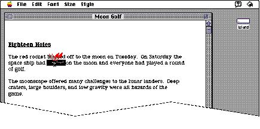

|
Double-ClickingDouble-clicking involves a second click that follows immediately after the first click. If the two clicks are close enough to one another in terms of time(as set by the user in the Mouse control panel) and of screen location (usually within one or two pixels), they constitute a double click. The most common use of double-clicking is to provide a shortcut to other actions. For example, clicking an icon twice is a faster way to open it than clicking once to select it, then choosing Open from the File menu. Clicking a word twice to select it is faster than dragging through it. Figure 10-5 shows the effect of double-clicking a word in a text document. Figure 10-5 Double-clicking to select a word  Double-clicking is a shortcut for those users who are
physically able to Some applications support selection by double-clicking and triple-clicking. The second click extends the effect of the first click, and the third click extends the effect of the second click. For example, in a text-oriented application, the first click sets an insertion point, the second click selects the whole word containing the insertion point, and the third click might select the whole sentence or paragraph. In a graphics application, the first click might select a single object, and double and triple clicks might select successively larger sets of objects. Three clicks is probably the practical limit, and even that is difficult for many people. If an application defines the effect of only single- and double-clicking, a third click should have no effect. If triple-clicking is defined, then the fourth click should have no effect. |